Couchbase Capella: Azure Cloud Connection Prerequisites
|
This information is for anyone still using Couchbase Server 6.6, hosted in their own cloud provider’s VPC. It does not apply to Couchbase 7.0, hosted in Couchbase’s VPC and fully managed for you. For further information contact Couchbase. The easiest way to get started with Capella, our fully managed DBaaS, is hosting in Couchbase’s Cloud. |
There are three prerequisites for the Azure Cloud connection with Couchbase Capella.
-
You must register the Microsoft.ContainerService Resource Provider for your subscription. This provider is necessary to enable Capella to use the Azure Kubernetes Service (AKS).
-
You must register the Enterprise Application from Couchbase Capella. This enables the registration of an Application in the Azure Tenant at the time of connecting Capella with Azure. The Application in the Tenant allows Capella to provision infrastructure within the Tenant level. There will be one Enterprise Application and one Application per Tenant that Capella has a cloud connection to.
-
You must ensure that the Azure account used when making a connection between Couchbase Capella and Azure has “Owner” privilege on the subscription in that user’s tenant. This is necessary for the Azure Resource Manager (ARM) Template to execute and create the infrastructure necessary for Capella to use Azure.
Before starting this process, make sure you have the following:
-
An Azure user account with the Global Administrator role on the tenant that will be used with Couchbase Capella.
-
An Azure user account that will be used when creating Azure cloud connections for Capella.
-
The Azure CLI installed or use of Azure Cloud Shell Feature (more information on the CLI here: https://docs.microsoft.com/en-us/azure/cloud-shell/overview).
Register the Microsoft.ContainerService Resource Provider
-
Go to the Azure portal and login with a user account that has the Global Administrator role.
-
On the Home dashboard, click Subscriptions.
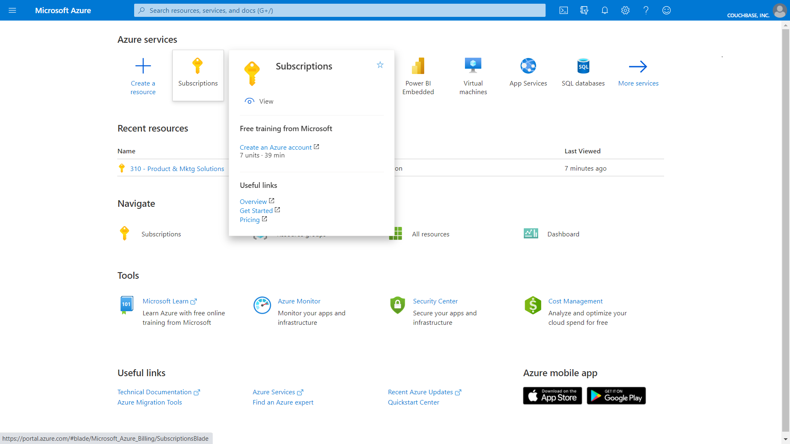 -
On the Subscriptions screen, select the subscription you want to use with Couchbase Capella by clicking its name.
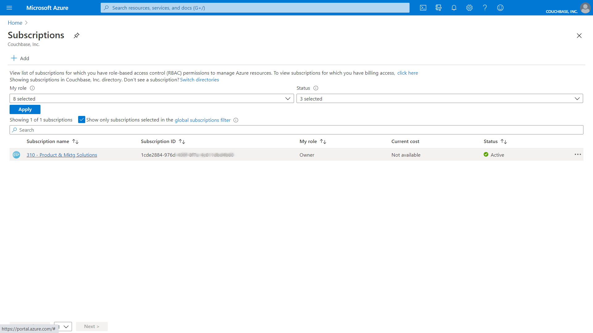The properties for your subscription will display.
-
In the left side navigation, select “Resource Providers”. A list of resource providers will display in the main panel.
In the “Filter by name” text box, type “Microsoft.ContainerService”, this will filter the list to just that service.
Click on “Microsoft.ContainerService” in the Provider list, then click “Register” to register the service.
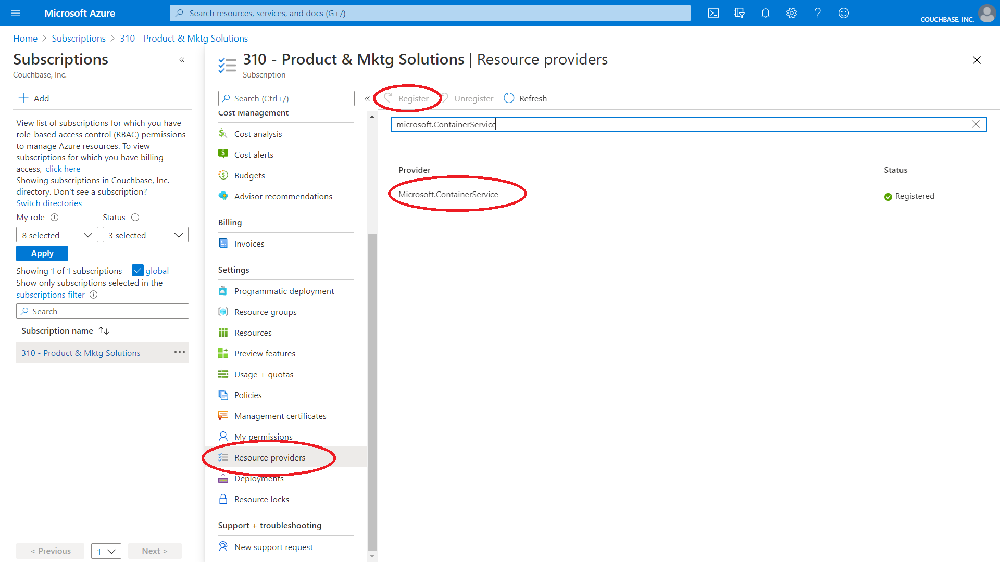
Register the Couchbase Capella Enterprise Application
-
Install the Azure CLI
If you are using Azure Cloud Shell or the Azure CLI is already installed, this step can be skipped. Copy, paste and run the following code in a terminal shell:
brew update && brew install azure-cliInvoke-WebRequest -Uri https://aka.ms/installazurecliwindows -OutFile .\AzureCLI.msi; Start-Process msiexec.exe -Wait -ArgumentList '/I AzureCLI.msi /quiet'; rm .\AzureCLI.msiFor more information on the Azure CLI or to install on other OS’s, go the Azure CLI page here.
-
Login to Azure
Once the CLI is installed, you can log in to Azure.
At the command prompt, type
az loginand press the Enter key.Your browser window will open and you will be prompted to login to Azure. You must use an account that has the Global Administrator role for your Azure tenant.
Once you are authenticated, the terminal window displays a message as shown:
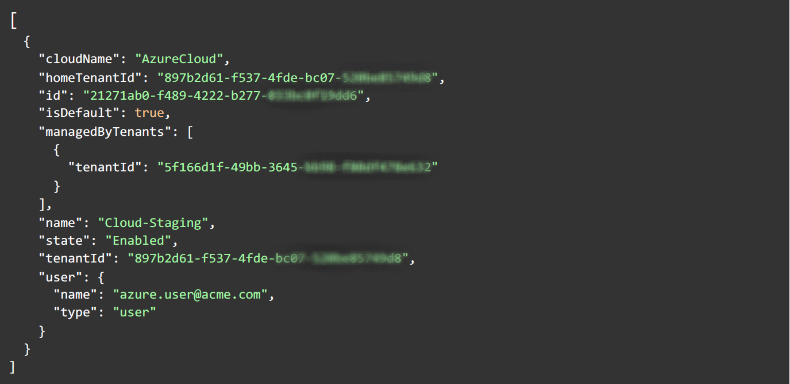 -
Register Couchbase Azure Enterprise Application
The Couchbase Capella app needs to be registered as an Enterprise Application (service principal) in your Azure tenant.
The Couchbase Azure App ID is: 8e365e8c-03f4-4f5e-ae3f-b432805a56e5
At the command prompt, copy, paste and run the following command:
az ad sp create --id 8e365e8c-03f4-4f5e-ae3f-b432805a56e5You should see information about the Couchbase Capella Enterprise App on the terminal window as shown:
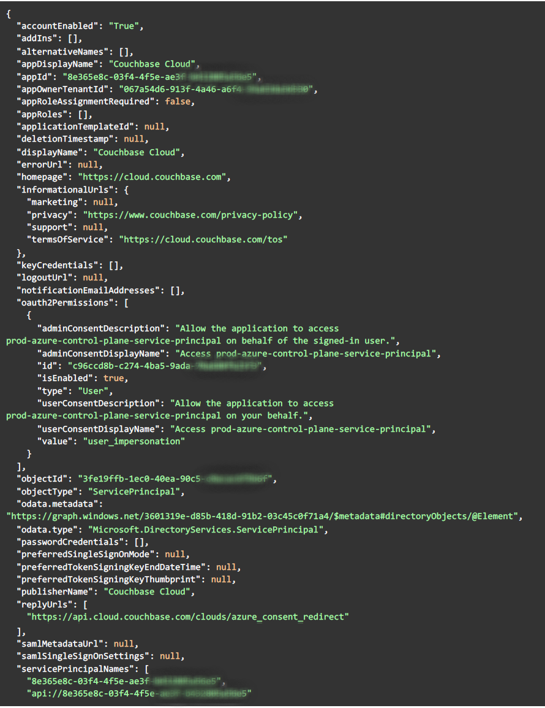An error message Insufficient privileges to complete the operation.at this point indicates that your Azure login lacks the Global Administrator role. You must try again with the appropriate role.
Grant Admin Consent for Couchbase Capella Enterprise Application
Once the Couchbase Capella Enterprise Application is registered, you must grant Admin Consent for the application. This enables the registration of an Application in the Azure Tenant at the time of connecting Couchbase Capella with Azure. The Application in the Tenant allows Couchbase Capella to provision infrastructure within the Tenant level.
-
Log in to the Azure Portal as a user who has the Global Administrator role.
-
In the portal, select Enterprise Applications , in the left side navigation select “All Applications”.
All Enterprise Applications will be listed.
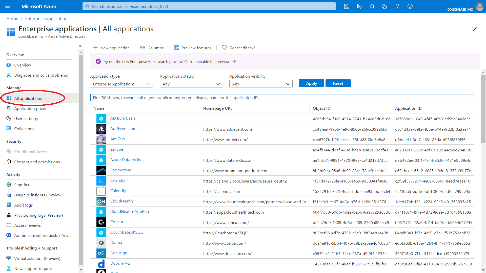 -
In the filter text box above the list of Enterprise Applications, enter the application ID 8e365e8c-03f4-4f5e-ae3f-b432805a56e5.
The "Couchbase Capella" Enterprise Application will be listed.
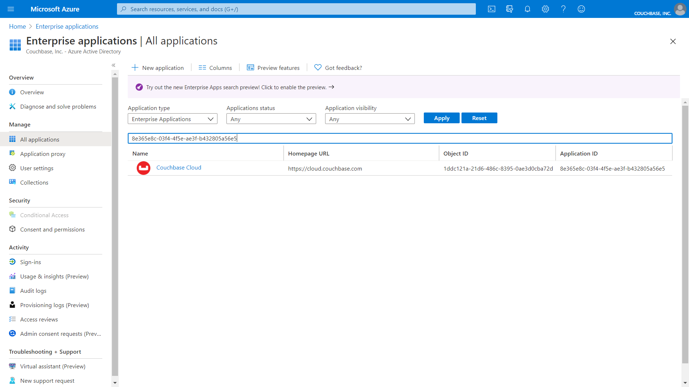 -
Click on the "Couchbase Capella" Enterprise Application in the list, the Overview screen displays.
Click "Permissions"” in the left side navigation.
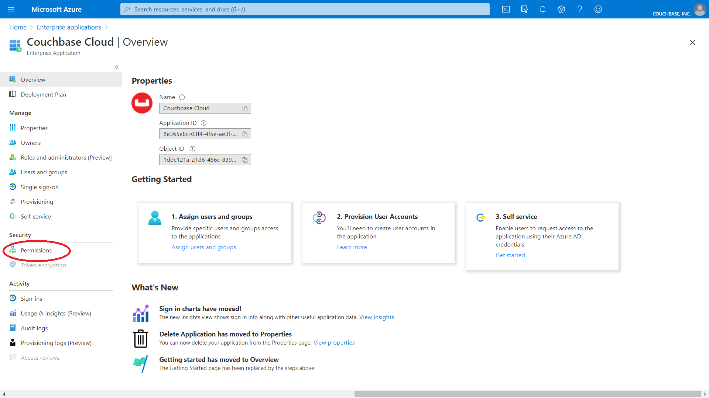 -
Click the button labeled "Grant Admin Consent for Couchbase, Inc."
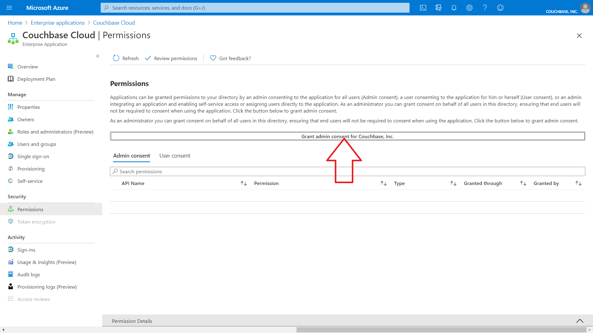 -
You will be prompted to log in to your account again. Ensure that you are using the same Azure user account with the Global Administrator role. After logging in, you will see a permission acceptance dialog.
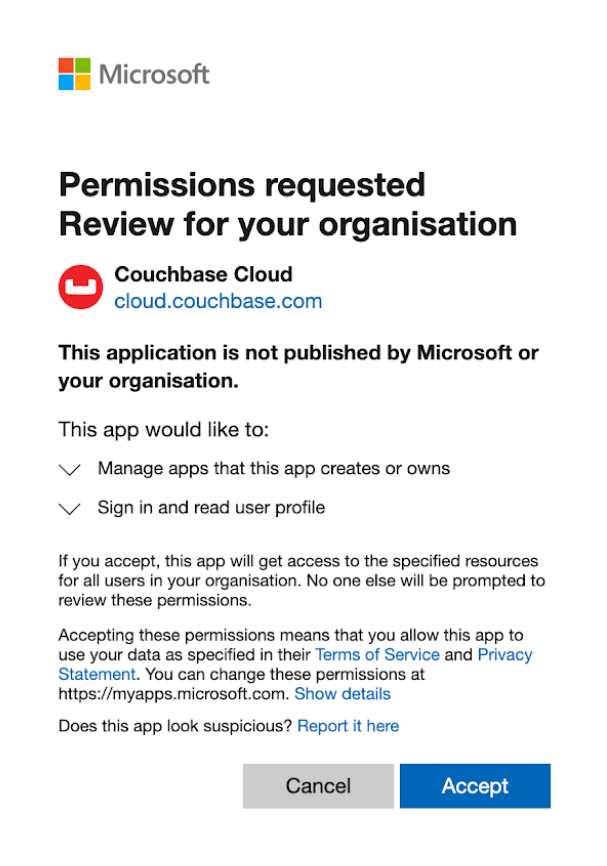Click "Accept".
-
In the Azure portal on the Enterprise Applications Permissions screen, click "Refresh". The permissions for the Couchbase Capella Enterprise Application are displayed.
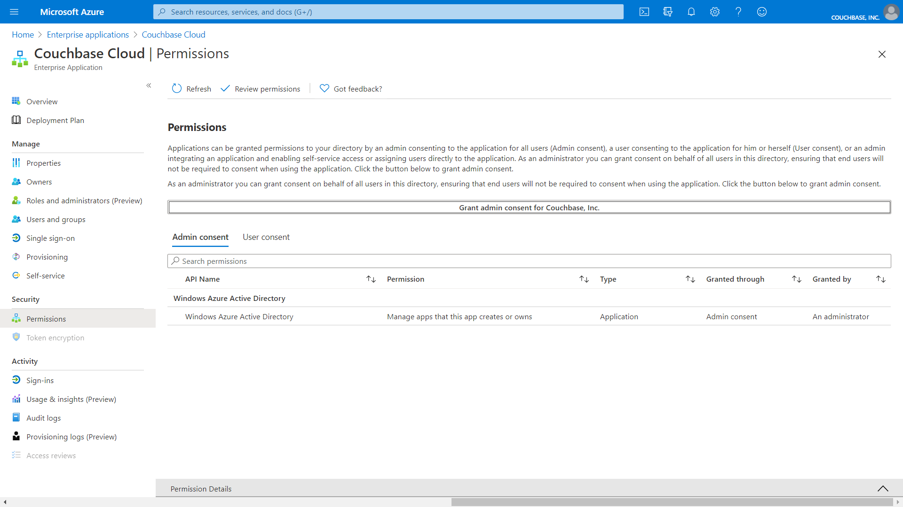
Grant Azure User Owner Privilege to Subscription
Lastly, you must grant the "Owner" privilege to the Azure user account that will be creating the connection to Azure in Couchbase Capella (this assumes that you will be using a different Azure user account to create a connection in Couchbase Capella).
-
Login to your Azure Cloud Portal as an existing administrator of the subscription that will be used with Couchbase Capella.
-
Click "Subscriptions".
-
On the Subscriptions screen, click on your account subscription name in the subscriptions list.
The properties for your subscription are displayed.
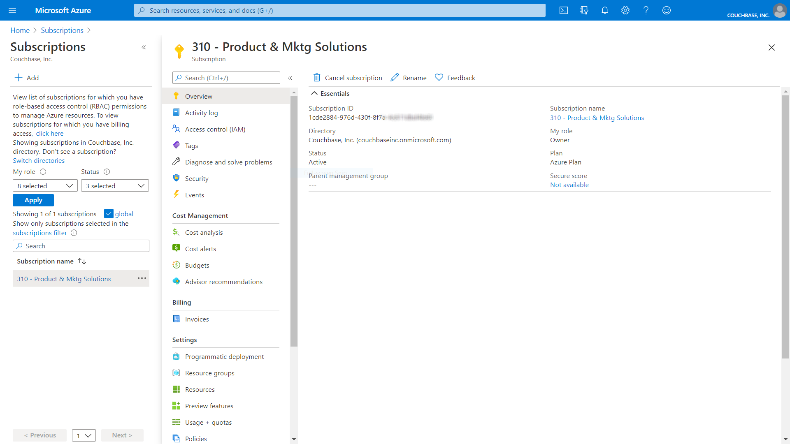
Add Azure User as an Owner of the Subscription
-
In the left side navigation, select “Access Control (IAM)" and click “Add”.
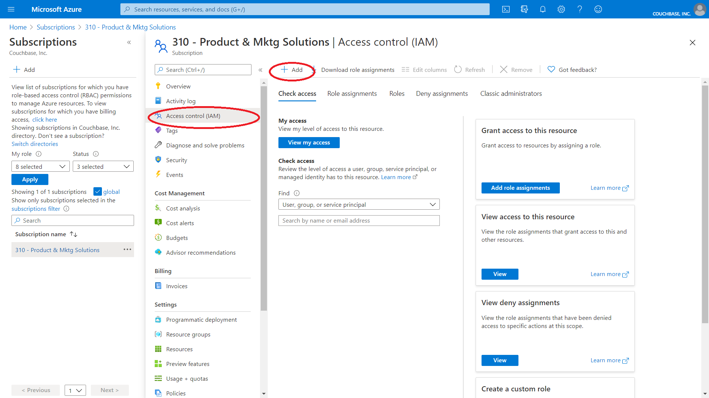 -
In the dropdown menu select “Add role assignment”.
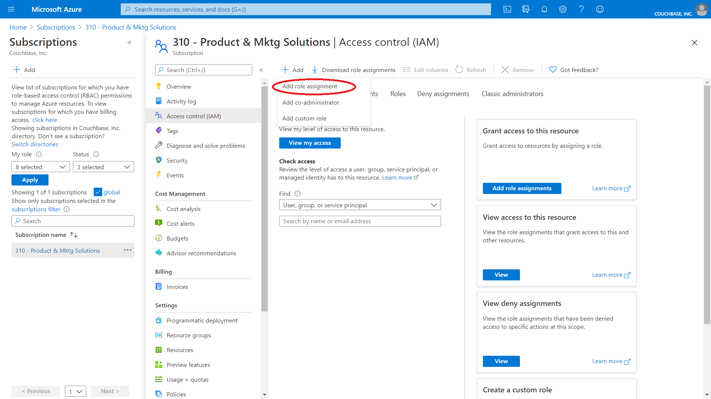The Add Role Assignment fly-out displays.
-
Under “Role” select “Owner”, then search for and select the user you want to grant the “Owner” role to from the list.
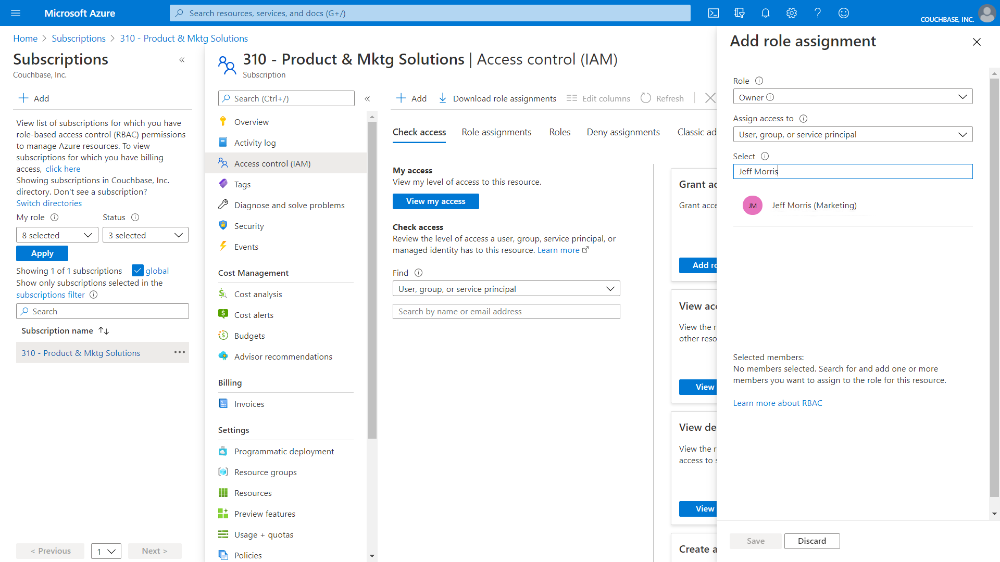 -
Click Save.
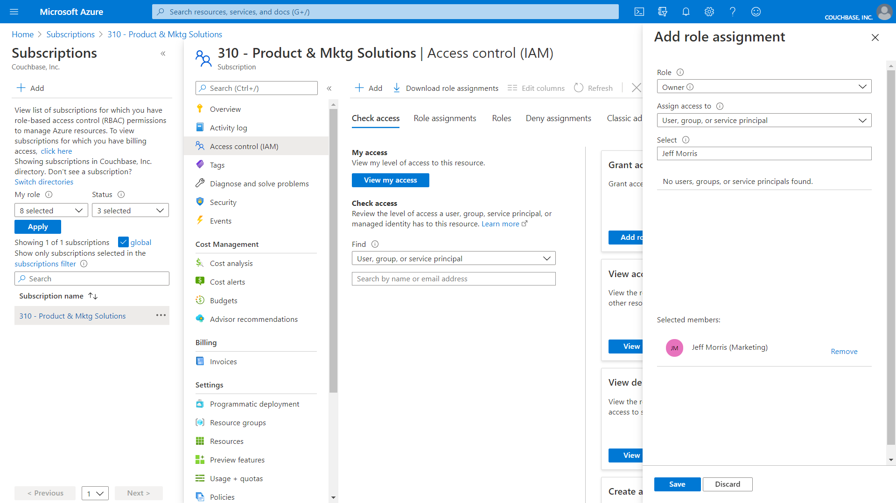 -
To verify, select Access Control (IAM ) once more and then click View from the View access to this resource box.
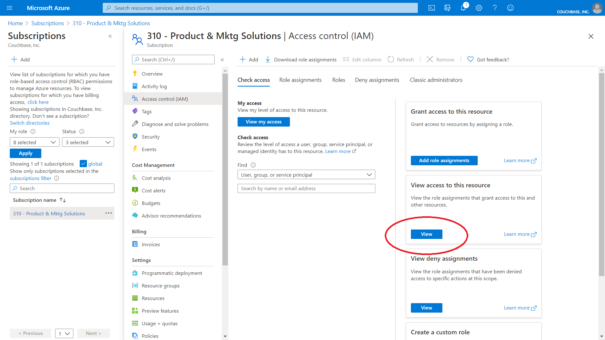You should see the user listed as an Owner.
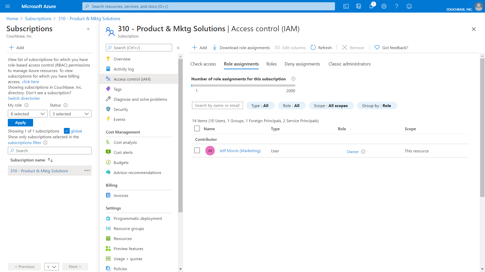Use this account when adding an Azure cloud to Couchbase Capella.
Here are some additional notes on this process:
-
Couchbase Capella Enterprise Application has the following roles assigned to it
-
Application administrator
-
Cloud application administrator
-
Reports reader
-
-
The Application, created from the Couchbase Capella Enterprise Application, has the following roles assigned to it:
-
Application administrator
-
Cloud application administrator
-
-
The Application is created at the moment when you connect your Azure cloud to Couchbase Capella.
-
If the Couchbase Capella Enterprise Application is later deleted, no new Cloud connections can be created to your Azure Cloud; existing connections will still function so long as the Application within each Tenant has also not been deleted.
Well done! Now you are ready to go through the Getting Started with Couchbase Capella Free Trial tutorial and deploy a cloud on your Azure account -- if you have already followed the Create Account step, jump straight in to the Deploy Your First Cluster page, and follow the Azure instructions there.